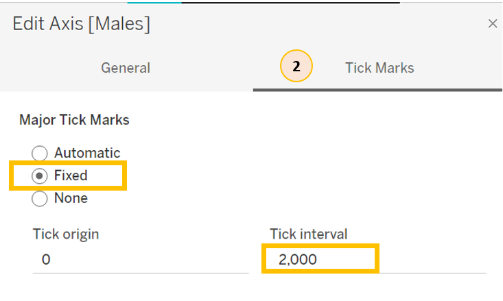
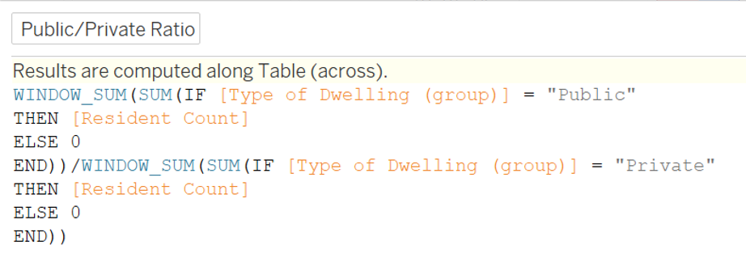

Take Home Exercise 1
1. Overview
In this take-home exercise, we will explore using age-sex pyramids to showcase the age and gender distribution of Singapore population in nine selected planning areas on single view using trellis display.
2. Dataset
The dataset used, Singapore Residents by Planning Area / Subzone, Age Group, Sex and Type of Dwelling, June 2022, can be retrieved from the Singapore Department of Statistics home page.
Additional information on regions and maturity of the planning areas were referenced from Wikipedia and PropertyGuru Singapore to provide more insights to the readers. The consolidated Excel file can be retrieved from Github.
3. Preparation Steps
3.1 Preparing the data in Tableau
| Step | Description | Screenshot |
|---|---|---|
| 1. | Load the csv file into Tableau. Click “Connect to Data” –> click “Text file” and select the CSV file to connect to |
|
| 2. | View the Notes. Click on “View data” –> the view data screen will appear. |
 |
| 3. | Rename the columns according to the data in Notes. In the viewing panel on the right, click the down arrow button beside each field name –> select “Rename” and change the name according to table shown in step 2. |
 |
| 4. | Save the Tableau file. Click on “Save” button |
|
| 5. | Adding additional information on region and maturity. Click “Add” –> click “Microsoft Excel” and select the file to add. |
|
| 6. | Build the connection with “Maturity”. 1. Drag “Maturity” to the right until a line is form to connect to the original data. 2. Select “Planning Area” = “Planning Area1” |
|
| 7. | Build the connection with “Region”. 1. Drag “Region” to the right until a line is form to connect to the original data. 2. Select “Planning Area” = “Planning Area (Region)” |
 |
3.2 View the data and select 9 planning areas
| Step | Description | Screenshot |
|---|---|---|
| 1. | Selecting the 9 planning areas based on highest resident count and when possible, choose 1 mature and 1 non-mature within same region. Click on sheet 1 1. Drag “Region” into Columns, drag “Planning Area” and “Maturity” into Rows, then place Resident Count onto the table body. 2. Sort each region to find out the planning areas with highest resident count. Central - Bukit Merah (Mature) East - Bedok (Mature), Tampines (Mature) North - Woodlands (Non-mature), Yishun (Non-mature) North-East - Sengkang (Non-mature), Ang Mo Kio (Mature) West - Jurong West (Non-mature), Clementi (Mature) |
.png) .png) |
| 2. | Apply Filter. Drag “Planning Area” into filter, select the 9 planning areas listed in previous step and click “Apply”. |
 |
| 3. | Apply Filter to all worksheets. Click on “Planning Area” under filter, select “Apply to Worksheets” –> “All Using This Data Source”. |
 |
3.3 Plotting the charts
| Step | Description | Screenshot |
|---|---|---|
| 1. | Create calculated field for Female and Male resident count Under Analysis, click “Create Calculated Field” Create a calculated fields - “Female” by keying in the formula shown on the right, then repeat the step and create another calculated fields - “Male”. |
 .png) .png) |
| 2. | Create the base for age-sex pyramids Drag “Female” and “Male” onto Columns and drag “Age Group” onto Rows. |
 |
| 3. | Create calculated field - Index Under Analysis, click “Create Calculated Field” Create a calculated fields - “Index” by keying in the formula shown on the right. |
|
| 4. | Create parameter - Number of Columns On Data panel, right click on empty space and select “Create Parameter…” On Edit Parameter screen, change the name and key in Current value of 2 |
 .png) |
| 5. | Create calculated field - Columns Under Analysis, click “Create Calculated Field” Create a calculated field - “Columns” by keying in the formula shown on the right. Once the calculated field “Columns” is created, right click on it on the Data panel, and select “Convert to Discrete” |
 .png) |
| 6. | Build trellis display 1. Drag “Columns” to Columns and drag “Region” to Rows 2. Drag “Planning Area” to Detail 3. Right click on “Planning Area” under Detail and select Compute using “Planning Area” |
.png) |
| 7. | Edit X-Axis of “Females” 1. Right click “Females” on X-axis and select Edit Axis. 2. Select Fixed under range and set Fixed start to 0 and Fixed end to 14000. Check “Reversed” under Scale. 3. Navigate to “Tick Marks”, set Major Tick Marks to Fixed and set Tick interval to 2000. |
 .png) .png) |
| 8. | Edit X-Axis of “Males” Right click “Males” on X-axis and select Edit Axis. 1. Select Fixed under range and set Fixed start to 0 and Fixed end to 14000. 2. Navigate to “Tick Marks”, set Major Tick Marks to Fixed and set Tick interval to 2000. |
  |
| 9. | Change fill and border colors Click on color, select red fill and border line for “Females” and blue for “Males” for more intuitive visualization. |
|
| 10. | Sort the charts by resident counts 1. Drag “Resident Count” onto Tooltip 2. Right click on “Planning Area” under All panel, and select Sort 3. Select sort by “Field” and set Field Name as “Resident Count” 4. Click on the triangle icon beside Region under Rows, Select sort by “Field” and set Field Name as “Resident Count” |
 .png) .png) .png) |
3.4 Creating calculated fields for additional insights
| Step | Description | Screenshot |
|---|---|---|
| 1. | Create calculated field - Female-to-Male Ratio Under Analysis, click “Create Calculated Field” to create a calculated field - “Female-to-Male Ratio” by keying in the formula shown on the right. |
 |
| 2. | Group type of dwelling into public, private and others 1. Right click on Type of Dwelling, select “Create” and the “Group” 2. Select the respective dwelling types and click Group, once all the 3 groups have been formed, click “Apply”. |
|
| 3. | Create calculated field - Public/Private Ratio Under Analysis, click “Create Calculated Field” to create a calculated field - “Public/Private Ratio” by keying in the formula shown on the right. |
 |
| 4. | Create calculated field - Top Age Group Under Analysis, click “Create Calculated Field” to create 2 calculated fields - “TopAgeGroup-Female” and “TopAgeGroup-Male” by keying in the formula shown on the right. |
 .png) |
| 5. | Create calculated field - Window Resident Count Under Analysis, click “Create Calculated Field” to create a calculated field - “Window Resident Count” by keying in the formula shown on the right. |
3.5 Labelling the charts
| Step | Description | Screenshot |
|---|---|---|
| 1. | Create AVG(1) Type AVG(1) into columns. |
 |
| 2. | Change chart type and color opacity Click on the dropdown button beside “Bar” and select “Line”. Then click on Color and adjust opacity to 0%. |
|
| 3. | Adding Labels 1. Drag “Planning Area”, “Maturity”, “Window Resident Count”, “Female-to-Male ratio” and “public/private ratio” onto Label 2. Right click on “Maturity” and select “Attribute” |
 |
| 4. | Edit Label Type AVG(1) into columns. |
.png) |
3.6
4. Key Insights
- Sengkang - has